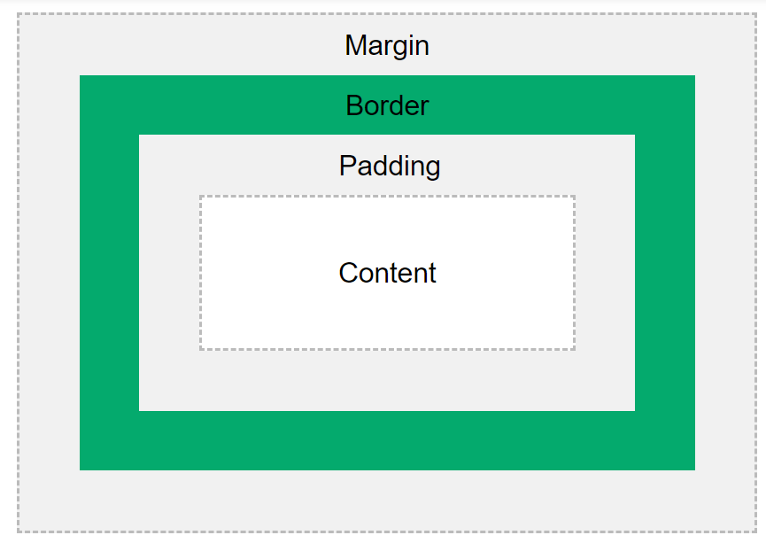

Demonstrating the Box Model
The CSS box model is essentially a box that wraps around every HTML element. It consists of: borders, padding, margins, and the actual content.
This text is the content of the box. We have added a 50px padding, 20px margin and a 15px green border. Ut enim ad minim veniam, quis nostrud exercitation ullamco laboris nisi ut aliquip ex ea commodo consequat. Duis aute irure dolor in reprehenderit in voluptate velit esse cillum dolore eu fugiat nulla pariatur. Excepteur sint occaecat cupidatat non proident, sunt in culpa qui officia deserunt mollit anim id est laborum.
Calculate the total width:

The picture above is 350px wide. The total width of this element is also 350px.